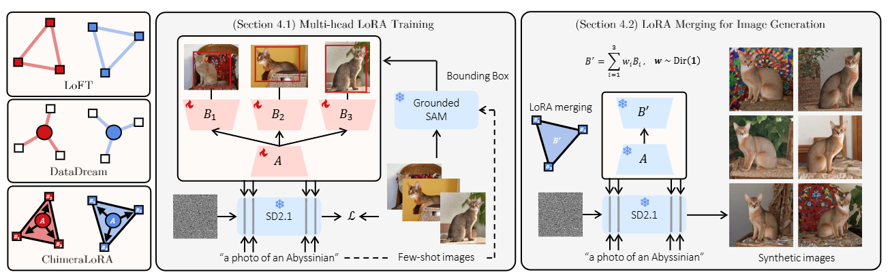

Jabin Koo 구자빈
Integrated PhD student, Department of Computer Science and Engineering
Pohang University of Science and Technology (POSTECH), Pohang, South Korea
About
I am an integrated PhD student in the Department of Computer Science and Engineering at Pohang University of Science and Technology (POSTECH), where I am a member of the Machine Learning Laboratory and am advised by Prof. Jungseul Ok.
My research interests lie in machine learning, federated learning, and large language models. I am currently focused on efficient computation and personalization in distributed large language model systems, particularly through mixture of experts and multi-agent systems.
Publications
-
 Federated Variational Preference Alignment with Gumbel–Softmax Prior for Personalized User Preferences
Federated Variational Preference Alignment with Gumbel–Softmax Prior for Personalized User Preferences
ICML 2026 · arXiv -

-

-
 Towards Robust and Efficient Federated Low-Rank Adaptation with Heterogeneous Clients
Towards Robust and Efficient Federated Low-Rank Adaptation with Heterogeneous Clients
ACL 2025 — Oral · arXiv -
 Fast Personalized Pruning in Federated Learning
Fast Personalized Pruning in Federated Learning
KAIA Summer 2022 — Best Paper Award
Patents
-
Alternating Freeze for Federated Learning in Local Devices
로컬 장치의 교차 동결 학습 방법 및 이를 실행하는 로컬 장치
Inventor: 구자빈 (Jabin Koo) Application No. 10-2025-0159585, 2025 -
Adaptive Rank Selection for Federated Learning in Local Devices
로컬 장치의 적응형 학습 방법 및 이를 실행하는 로컬 장치
Inventor: 구자빈 (Jabin Koo) Application No. 10-2025-0159549, 2025
Awards
-
Best Paper Award, Korean Artificial Intelligence Association Summer Conference (KAIA)
2022
For “Fast Personalized Pruning in Federated Learning”.
Academic Service
Reviewer
- Conference on Neural Information Processing Systems (NeurIPS), 2026
- International Conference on Learning Representations (ICLR), 2026
- ACL Rolling Review (ARR), March 2026 cycle